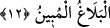
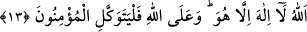

îmânını, ihlâsını da bilir ve kalbini zikredilen hususlara götürür.
12. Allah’a itâat edin, Peygamber’e de itâat edin. Yüz çevirirseniz bilin ki,
elçimize düşen apaçık bir duyurmadır.
Bir kölenin efendisine emrettiği her hususta itâat ettiği gibi “Allah’a itâat edin,” ve
bir ümmetin Allah’tan getirdiği hususlarda peygamberine itâat ettiği gibi “Peygambere
itâat edin.” Başınıza gelen musibetler, sizleri Allah’a itâatten, O’nun kitabına göre
amel etmekten, Peygamber (s.a.)’e itâatle meşgul olmaktan ve onun sünnetine tâbi
olmaktan alıkoymasın. Gerek ferahlık gerek sıkıntı anlarınızda bütün yönelişiniz,
Allah’ın sizlere teşriî buyurduğu hükümler uyarınca amel etmek olsun.
Kâşâni bu âyet-i kerimeyi şöyle tefsir eder: Allah ve Rasûlü’ne mârifetinize göre itâat
edin. Çünkü kemal mertebesine erişememenin, hüsran ve noksana düşmenin ekseriyeti,
basiretsizlikten değil, ameldeki eksiklikten dolayıdır.
Yüce Allah’ın bu âyet-i kerimede “etîû: itâat einiz” emrini iki defa zikretmesi, emri
pekiştirmek, Allah ile peygambere itâatın keyfiyet açısından farklı olduklarını beyan
etmek, ilerde gelecek olan “eğer yüz çevirirseniz” âyetindeki “yüz çevirme”nin
kaynağını açıklamak içindir.
Şâyet peygambere itâattan “yüz çevirirseniz,”ona bir sorumluluk yoktur, zira
“elçimize düşen apaçık bir tebliğdir.” Peygamber (s.a.) de bu görevini zaten sonuna
kadar yapmıştır.
Burada rasul kelimesinin Allah’ın adını belirten “ ” zamirine muzaf olarak
“Rasûlümüz” şeklinde gelmesinin sebebi, Peygamber Efendimiz’i şereflendirmek ve
hilminin boyutuna işâret etmek içindir ki bu da Peygamber Efendimiz (s.a.)’in görevinin
sadece tebliğ olmasıdır. Rasûl kelimesinin “ ” zamirine muzaf olmasının bir diğer
sebebi de ondan (s.a.) yüz çevirmenin ne kadar çirkin olduğunu vurgulamaktır.
et-Te’vilâtu’n-necmiyye’de bu âyet şöyle tefsir edilir: Zâtına ve sıfatlarına
mazhariyetin sebeblerini hazırlamak sûretiyle “Allah’a ve” şeriatinin zâhiri ahkâmına
ve onun gittiği yolun bâtınî âdâbına mazhariyete kabiliyeti elde etmek sûretiyle
“Peygambere itâat edin.” Sebepleri, istidâdı hazırlamaktan, dünyaya ikbal ile şehvet
denizlerinde yok olarak bu iki küllî husustan “yüz çevirirseniz elçimize düşen apaçık
bir tebliğdir.” Size ise alçaltıcı bir azap vardır.